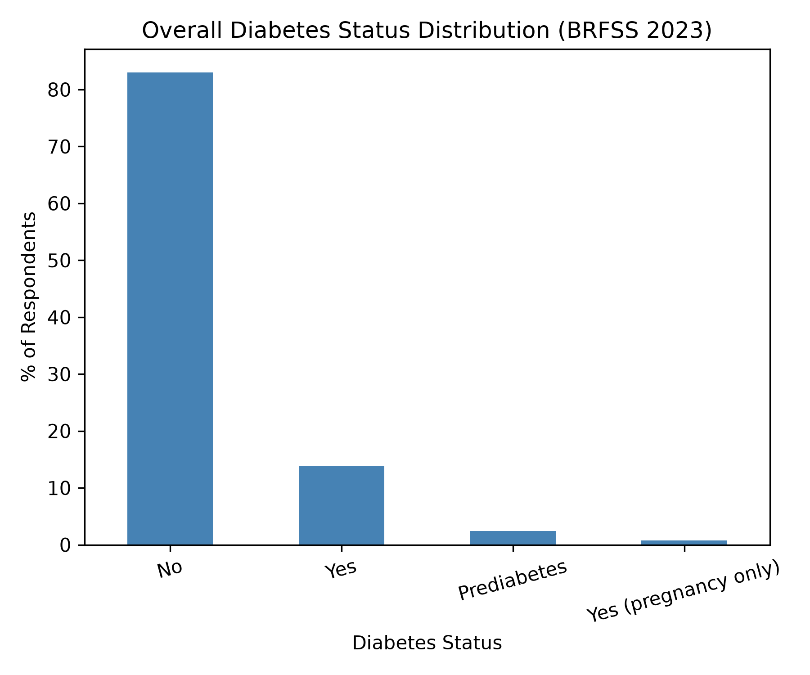

Diabetes Risk Factor Analysis
Analysis of the CDC Behavioral Risk Factor Surveillance System (BRFSS) 2023 dataset using Python to explore relationships between diabetes prevalence and demographic and health-related factors including age, sex, obesity status, and BMI category.
Project Overview
This project demonstrates an end-to-end data analysis workflow using Python, pandas, NumPy, and Matplotlib. The dataset was cleaned, validated, transformed, and analyzed to identify patterns in diabetes prevalence across multiple demographic and health-related variables.
Diabetes Prevalence by Age

Diabetes prevalence increases substantially with age, making age one of the strongest predictors observed in the dataset.
Diabetes by BMI Category

Higher BMI categories were associated with increased diabetes prevalence.
Diabetes by Obesity Status

Respondents classified as obese reported diabetes at substantially higher rates.
Diabetes by Sex

Diabetes prevalence showed modest differences between male and female respondents.
Overall Diabetes Distribution

Most respondents reported not having diabetes, though the affected population remains substantial.
Key Findings
- Diabetes prevalence increased steadily across age groups.
- Obese respondents reported diabetes at significantly higher rates than non-obese respondents.
- Higher BMI categories were associated with increased diabetes prevalence.
- Sex-based differences existed but were less pronounced than age and obesity-related trends.
- Age and obesity emerged as the strongest risk indicators within the analyzed variables.